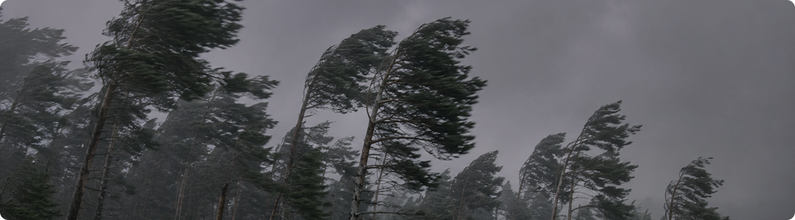
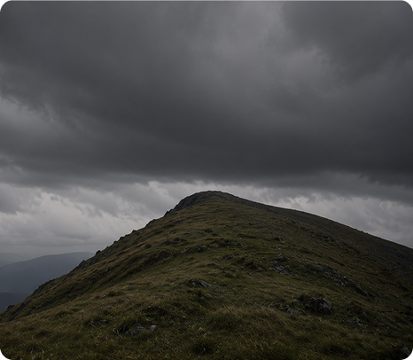
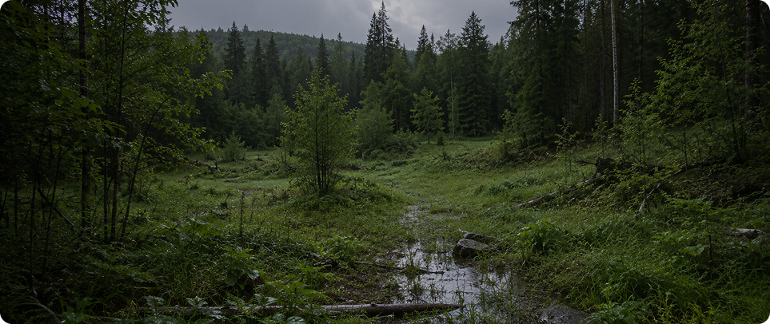
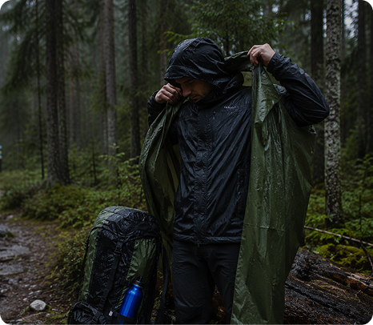
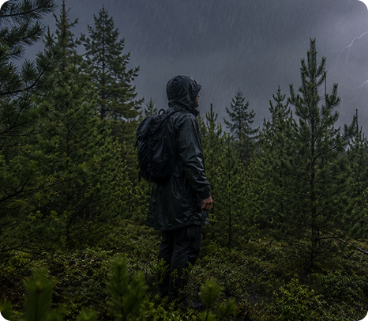
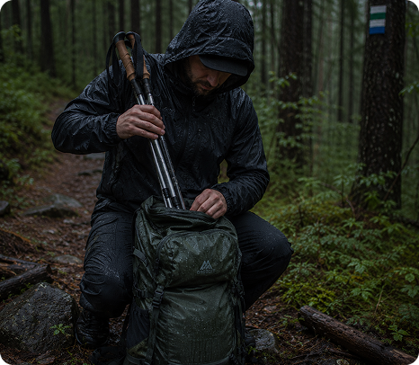

Гроза в лесу может начаться неожиданно. Даже если прогноз выглядел благоприятным, сильный ветер, дождь и молнии способны быстро изменить условия прогулки.
Важно помнить: большинство опасных ситуаций возникают не из-за самой грозы, а из-за неправильных действий человека. Спокойствие, выбор подходящего укрытия и понимание базовых правил помогают значительно снизить риск.
Почему гроза особенно опасна в лесу
Лес часто воспринимается как естественное укрытие от непогоды, однако во время грозы некоторые его особенности могут создавать дополнительные риски. Сильный ветер способен ломать сухие ветви и поврежденные деревья, а мокрая почва становится более скользкой и затрудняет передвижение.
Кроме того, во время ливня заметно снижается видимость троп и ориентиров. Именно поэтому важно не только найти безопасное место, но и заранее следить за изменением погоды во время прогулки.
Как понять, что гроза приближается
Обычно лес заранее подаёт несколько заметных сигналов. Чем раньше ты их заметишь, тем больше времени останется для поиска безопасного места.

Усиление ветра
Порывы становятся сильнее, деревья начинают заметно раскачиваться
Тёмные облака
Небо быстро темнеет, появляются грозовые тучи и снижается видимость
Раскаты грома
Даже далёкий гром означает, что гроза уже приближается к вашему району прогулки
Если гром уже слышен, лучше не продолжать маршрут и начать искать место, где можно переждать непогоду.
БОЛЬШЕ В ДЗЕНЕ
Где безопаснее переждать грозу
Во время грозы важно избегать мест, которые увеличивают вероятность удара молнии или травм от падающих веток.
Низина
Небольшие понижения рельефа безопаснее открытых возвышенностей
Группа невысоких деревьев
Лучше находиться среди деревьев средней высоты, а не рядом с самым высоким
Расстояние от стволов
Не стой вплотную к деревьям и сухим веткам во время сильного ветра
Избегай воды
Отойди от ручьёв, луж и заболоченных участков до окончания грозы


Чего нельзя делать во время грозы
Некоторые интуитивные действия кажутся правильными, но могут быть опасны.
Не стоит прятаться под самым высоким деревом, выходить на открытые поляны, подниматься на холмы или продолжать движение по открытым участкам маршрута. Также лучше убрать металлические треккинговые палки и другие длинные предметы из рук.
Одно дерево
Самое опасное место во время грозы
Вершины
Холмы и открытые вершины увеличивают риск
Открытая поляна
Лучше быстро покинуть открытое пространство
Если гроза застала на маршруте
Иногда до укрытия далеко и приходится действовать прямо на тропе.
В такой ситуации главное — снизить свою заметность на открытом участке и спокойно дождаться улучшения погоды.



Что делать с телефоном и навигатором
Во время сильного дождя стоит заранее убрать телефон в водонепроницаемый карман или защитный чехол. Если устройство используется для навигации, заранее сохрани маршрут и карту для офлайн-доступа.
После окончания грозы проверь заряд телефона, состояние навигатора и убедись, что маршрут по-прежнему безопасен для продолжения прогулки.
После грозы не спеши продолжать путь
Даже если дождь закончился и небо начинает проясняться, условия в лесу могут оставаться сложными еще некоторое время. На тропах появляются лужи, корни и камни становятся скользкими, а отдельные ветви могут продолжать падать после сильного ветра.
Перед тем как продолжить маршрут, оцени состояние тропы, убедись в отсутствии сильных порывов ветра и дай себе несколько минут на отдых. Спокойное возобновление движения часто безопаснее, чем попытка быстро наверстать потерянное время.
Если между вспышкой молнии и раскатом грома проходит менее 30 секунд, гроза находится опасно близко. В такой ситуации лучше немедленно прекратить движение и найти безопасное место для ожидания